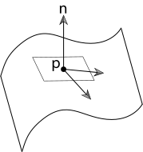

Geometry and Transformations
1.8 Interactions
Our ray tracer needs a way to represent information about points on 2D surfaces, which it will use in shading calculations.
In pbrt, this is achieved with the Interaction class, which defines the common data and methods for different kinds of interactions. Rust does not have a means for describing shared data for polymorphic types, so to achieve this, we provide two traits -- one with getters for the shared data elements, and one describing the shared methods.
#![allow(unused)] fn main() { pub trait InteractionData<T: Scalar> { //Location of this interaction fn point(&self) -> Point3d<T>; //Time of the interaction fn time(&self) -> T; //Floating point error fn p_error(&self) -> Vector3d<T>; //Negative direction of ray intersection fn wo(&self) -> Vector3d<T>; //Surface normal at this point, if this is an interaction with a surface fn n(&self) -> Option<Normal3d<T>> { None } //Flag representing whether or not this is a surface interaction fn is_surface_interaction(&self) -> bool { return self.n().is_some(); } //Scattering medium at this point, if any fn medium_interface(&self) -> Option<&dyn MediumInterface>; } }
The InteractionMethods trait defines several methods for spawning rays as follows:
#![allow(unused)] fn main() { pub trait InteractionMethods<T: Scalar>: InteractionData<T> { fn spawn_ray(&self, direction: Vector3d<T>) -> Ray<T> { Ray::new(self.point(), direction, T::inf(), self.time()) } fn spawn_ray_to_point(&self, point: Point3d<T>) -> Ray<T> { Ray::new(self.point(), point - self.point(), T::inf(), self.time()) } fn spawn_ray_to_interaction(&self, other: &dyn InteractionMethods<T>) -> Ray<T> { Ray::new(self.point(), other.point() - self.point(), T::inf(), self.time()) } } }
1.8.1 Surface Interactions
The geometry of a particular point on a surface (often a position found by intersecting a ray against the surface) is represented by a SurfaceInteraction. Having this abstraction lets most of the system work with points on surfaces without needing to consider the particular type of geometric shape the points lie on; the SurfaceInteraction abstraction supplies enough information about the surface point to allow the shading and geometric operations in the rest of pbrt to be implemented generically.
The SurfaceInteraction struct is defined as follows:
#![allow(unused)] fn main() { struct SurfaceInteraction<T: Scalar> { pub point: Point3d<T>, pub time: T, pub p_error: Vector3d<T>, pub wo: Vector3d<T>, pub n: Normal3d<T>, pub uv: Vector2d<T>, pub dp_du: Vector3d<T>, pub dp_dv: Vector3d<T>, pub dn_du: Normal3d<T>, pub dn_dv: Normal3d<T>, pub shading: Shading<T>, pub shape: Option<Box<dyn Shape<T>>>, } }
The first five fields correspond to those referred to in the InteractionData trait; getters are defined for these as part of the InteractionData impl block for SurfaceInteraction. The struct additionally stores uv, a 2d vector which provides a parameterized representation of the surface. The vectors dp_du and dp_dv represent the partial derivatives of the surface: \(\partial{p}/\partial{u}\) and \(\partial{p}/\partial{v}\). This allows us to represent the curvature of the surface.

Figure 1: Local Differential Geometry around a point \(p\)
The cross product of these partial derivatives gives us the surface normal as we move along the surface.
The SurfaceInteraction struct also stores a reference to the Shape it takes place on. Additionally, stores a second instance of a surface normal and the various partial derivatives to represent possibly perturbed values of these quantities as can be generated by bump mapping or interpolated per-vertex normals with triangles. Some parts of the system use this shading geometry, while others need to work with the original quantities. This is represented in a separate trait, the Shading trait. The SurfaceInteraction has an instance of Shading which is initialized at creation time and can be updated via the set_shading_geometry method.
The SurfaceInteraction new() constructor takes all of the above parameters as input, and computes the normal using the partial derivatives. It additionally reverses the direction of the normal in one of two situations:
- If the
Shapethat the interaction takes place on has areverse_orientationflag set totrue - If the
Shape's transformation matrix has switched the handedness of the object coordinate system from pbrt’s default left-handed coordinate system to a right-handed one
If both of the above conditions is true, we need the effects to cancel each other out, so an XOR (^) condition is used.
#![allow(unused)] fn main() { impl<T: Scalar> SurfaceInteraction<T> { pub fn new( point: Point3d<T>, time: T, p_error: Vector3d<T>, wo: Vector3d<T>, uv: Vector2d<T>, dp_du: Vector3d<T>, dp_dv: Vector3d<T>, dn_du: Normal3d<T>, dn_dv: Normal3d<T>, shape: Option<Box<dyn Shape<T>>>, ) -> Self { // Compute surface normal using partial derivatives let n = Normal3d::from_vec(dp_du.cross(&dp_dv).normalized()); // Invert the normal based on properties of the shape let adjusted_normal = if shape.is_some() { if (shape.as_ref().unwrap().transform_swaps_handedness()) ^ (shape.as_ref().unwrap().reverse_orientation()) { -n } else { n } } else { n }; SurfaceInteraction { point, time, p_error, wo, n: adjusted_normal, uv, dp_du, dp_dv, dn_du, dn_dv, shading: Shading { n, dp_du, dp_dv, dn_du, dn_dv }, shape } } } }
Finally, we need a way of applying a transform to a SurfaceInteraction. For the most part, members are either transformed directly or copied, as appropriate, but given the approach that pbrt uses for bounding floating-point error in computed intersection points, transforming the p and pError member variables requires special care. The fragment that handles this, is defined in a later section (TODO: update!), when floating-point rounding error is discussed.
#![allow(unused)] fn main() { impl<T: Scalar> Mul<SurfaceInteraction<T>> for Transform<T> { type Output = SurfaceInteraction<T>; fn mul(self, other: SurfaceInteraction<T>) -> Self::Output { SurfaceInteraction { point: &self * other.point, time: other.time, p_error: &self * other.p_error, wo: &self * other.wo, n: &self * other.n, uv: other.uv, dp_du: &self * other.dp_du, dp_dv: &self * other.dp_dv, dn_du: &self * other.dn_du, dn_dv: &self * other.dn_dv, shading: Shading { n: &self * other.shading.n, dp_du: &self * other.shading.dp_du, dp_dv: &self * other.shading.dp_dv, dn_du: &self * other.shading.dn_du, dn_dv: &self * other.shading.dn_dv }, shape: other.shape } } } }